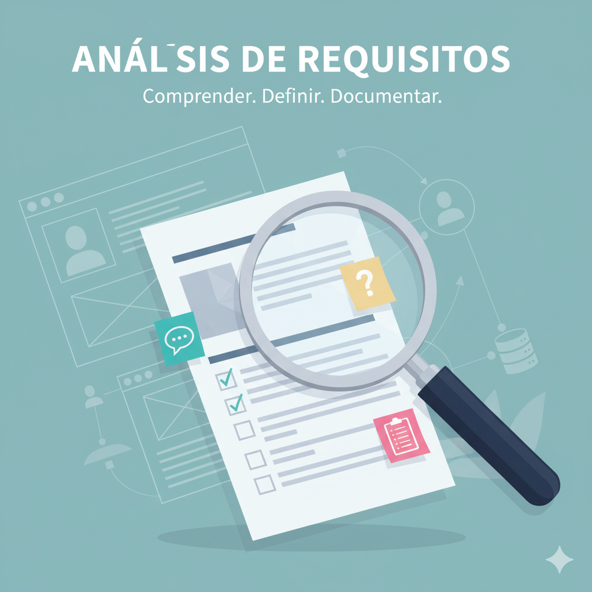

Fase 1: Análisis de Requisitos
Esta fase es crucial, ya que se centra en **identificar las necesidades exactas del cliente** y de los usuarios finales. El objetivo principal es la documentación detallada de todos los requisitos funcionales y no funcionales que el sistema debe cumplir. Una comprensión incompleta o errónea en esta etapa conduce inevitablemente a fallos costosos en las fases posteriores.
Las tareas incluyen la recopilación de información mediante entrevistas, cuestionarios y el análisis de sistemas existentes. El resultado es un documento formal conocido como Especificación de Requisitos de Software (ERS), que sirve como contrato entre el equipo de desarrollo y el cliente.
